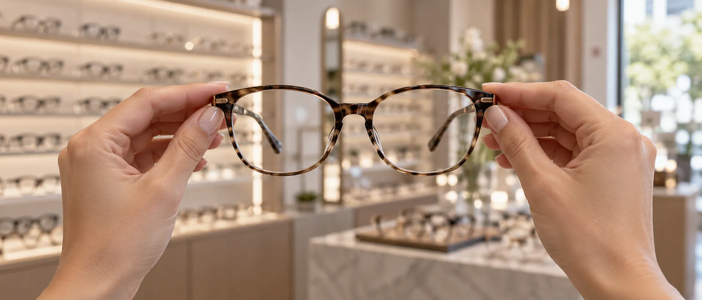

Od badania do okularów.
Gabinet okulistyczny i salon optyczny przy Piotrkowskiej 172/180 w Łodzi. Okulistka, optometrystka i oprawy kilkunastu marek pod jednym adresem.
Czym się zajmujemy


Badania i usługi
Ceny z cennika gabinetu. Na każde badanie zapisujemy telefonicznie, na wizytę u okulistki także przez ZnanyLekarz. [ceny do potwierdzenia]
- Badanie wzrokuoptometrystka100 zł
- Wizyta okulistycznaokulistka200 zł sob. 250 zł
- Diagnostyka jaskry GDx PROokulistka[cena]
- Dobór soczewek kontaktowychoptometrystka200 zł
- Konsultacja okulistyczna dzieciokulistka200 zł sob. 250 zł
- Badanie kierowcówgabinet180 zł
- Badanie okresowe okulistyczne do pracygabinet180 zł
Sprzęt, na którym badamy
-

Foropter
Porównujesz szkła jedno po drugim, aż obraz jest ostry i wygodny dla obu oczu.
-

Lampa szczelinowa
Ocena przedniego i tylnego odcinka oka, w tym badanie dna oka.
-

GDx PRO
Laserowa ocena włókien nerwowych siatkówki. Około 10 minut, bez kropli. O badaniu
Zdjęcia poglądowe, wygenerowane. Docelowo sesja sprzętu w gabinecie.
Jak wygląda badanie wzroku
Prowadzi je optometrystka. Okulary dobieramy dopiero wtedy, gdy wiemy, co dzieje się z okiem. Wizyta u okulistki i diagnostyka jaskry to osobne wizyty.
Rozmowa
Jak pracujesz, ile czasu spędzasz przy ekranie, co Ci przeszkadza w obecnych okularach.
Pomiar komputerowy
Autorefraktometr mierzy wadę w kilka sekund. To punkt wyjścia, nie gotowa recepta.
Dal i bliż
Foropter, kaseta szkieł próbnych i tablica: porównujesz szkła, aż obraz jest ostry.
Przednia część oka
Lampa szczelinowa. Jeśli coś budzi wątpliwości, proponujemy wizytę u okulistki.
Szkła i oprawa
Dobieramy rodzaj szkieł do Twojego dnia, potem oprawę, która na nie pasuje.
100 zł · soczewki kontaktowe zdejmij co najmniej godzinę przed badaniem · umów: 42 630 28 30
dr Monika Szczygłowska-Uramowska
okulistka · przyjmuje w gabinecie przy salonie, po wcześniejszym umówieniu
Badanie dna oka, pomiar ciśnienia w oku, recepta na okulary i soczewki, diagnostyka jaskry GDx PRO, konsultacje okulistyczne dzieci.
- 223
- opinie na ZnanyLekarz
- 5,0
- średnia ocen
- 200 zł
- wizyta, w sobotę 250 zł
Gabinet przyjmuje: [dni i godziny]

Joanna Subdys, optometrystka. Bada wzrok, dobiera szkła i soczewki kontaktowe, uczy ich zakładania. Zdjęcie poglądowe.

zdjęcie poglądoweOkulary i soczewki
Szkła progresywne do patrzenia daleko, na ekran i do czytania w jednych okularach. Pomiary centrowania robimy w salonie, pierwsze dni noszenia omawiamy przy odbiorze. Jedyny w Łodzi salon partnerski Essilor Varilux [do potwierdzenia].
Soczewki kontaktowe systematycznej wymiany, także progresywne, zamawiamy w salonie.
Zapytaj o progresy: 42 630 28 30- TREE Spectacles
- Carolina Herrera
- BOSS
- HUGO
- Carrera
- David Beckham
- Love Moschino
- Dolce&Gabbana
- Andy Wolf
- Karavan Kids
Oprawy tych marek są w salonie. Lista do potwierdzenia.
Okulary korekcyjne
Szkła dobrane do wyniku badania: do dali, do bliży albo do noszenia na stałe.
Szkła progresywne
Daleko, ekran i czytanie w jednych okularach, z pomiarami centrowania w salonie.
Okulary przeciwsłoneczne
Oprawy przeciwsłoneczne marek dostępnych w salonie.
Soczewki kontaktowe
Dobór i nauka zakładania, także soczewki progresywne.
Okulary dla dzieci
Lekkie, elastyczne oprawy i szkła odporne na upadki.
Co piszą pacjenci
[miejsce na opinię pacjenta z ZnanyLekarz]
[miejsce na opinię pacjenta z ZnanyLekarz]
Piotrkowska 172/180, lokal 4U
- Salon
- pon.–pt. 10:00–18:00, sob. 10:00–14:00
- Okulistka
- [dni i godziny gabinetu]
- Telefon
- 42 630 28 30 · 780 063 682
- Dojazd
- [parking, przystanek, wejście bramą]
 zdjęcie poglądowe
zdjęcie poglądowe